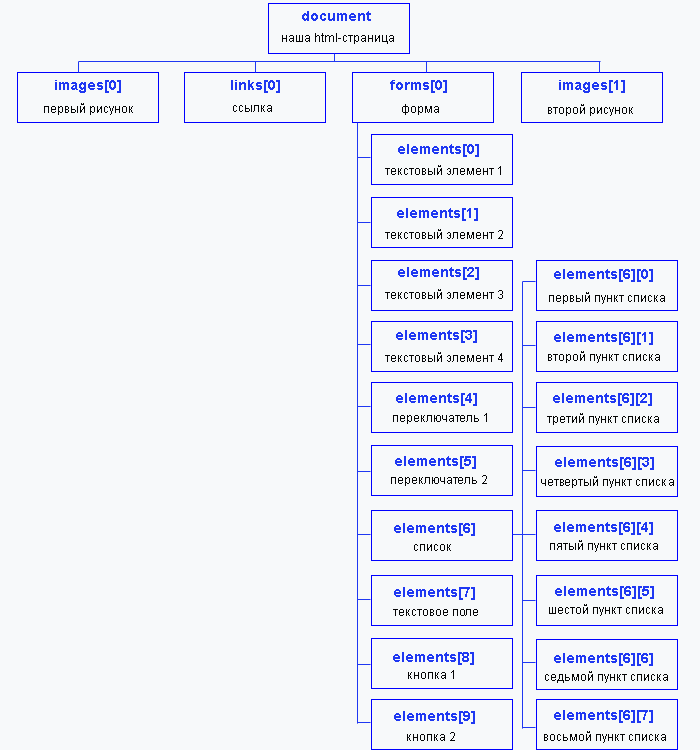

В языке JavaScript все элементы на web-странице выстраиваются в иерархическую структуру. Каждый элемент представляется в виде объекта. И каждый такой объект может иметь определенные свойства и методы.
Что бы детальнее разобратся сделаю страничку знакомств - вроде как :)
Тут даже всё завернуть в тег center ))) - что бы не нарушать иерархию. В итогк структура:
Каждый объект этой структуры имеет свое имя и индекс. Индекс определяется положением объекта на странице (сверху вниз). Поэтому картинка, которая расположена выше на странице имеет меньший номер. Нумерация начинается с 0. Объект forms имеет свойство-массив - elements , в котором содержатся ссылки на элементы формы в порядке их перечисления в теге form . Их нумерация также начинается с 0. У объектов формы могут быть свои подчиненные объекты. В нашем примере у объекта elements[6] , который является списком, это пункты списка, которые имеют свою внутреннюю нумерацию.
Что бы получить доступ к обьекту - указывается путь к нему "сверху вниз"
Например:
function prov(){
var a=document.forma1.elements[2].value;
var b=document.forma1.elements[3].value;
if (a==b){
alert ("Вы зарегистрированы!");
}
else
{
alert ("Введите правильный пароль.");
}
}
Дальше пытаюсь проверить любит ли мужчина животных - снова функция
function man_and_animal(){
if(document.form1.elements[4].checked && document.form1.elements[6][3].selected){
alert ("Мужчтна любит животных!");
}
else{
alert ("Непонятно связь мужика и животного");
}
}
Вышло! Ха!
Обрати внимание - в этой функции: .checked - для радио кнопок, .selected - для выбранных элементов списка